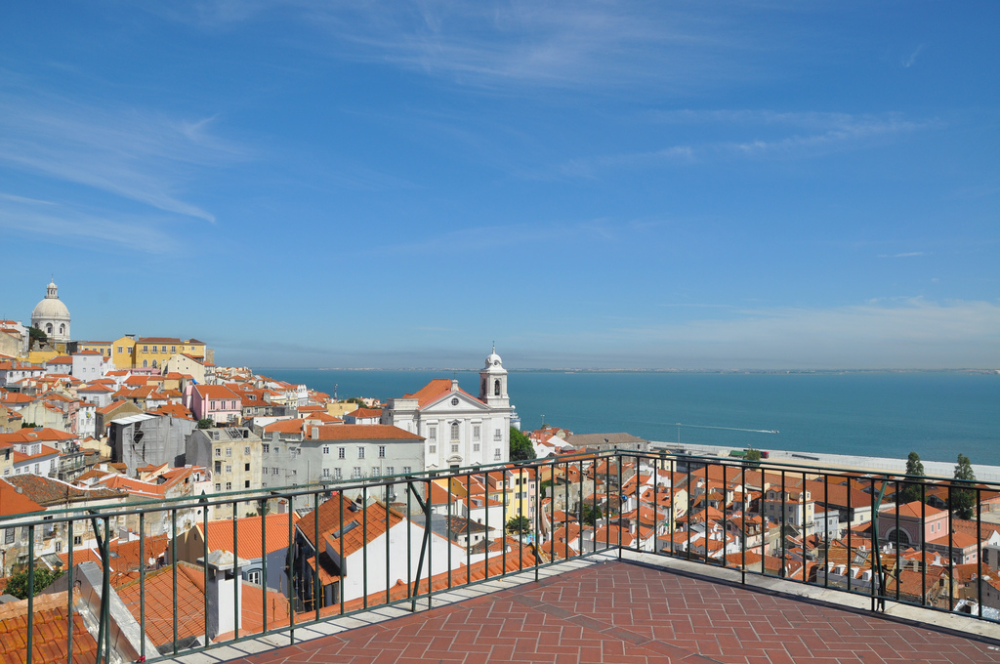
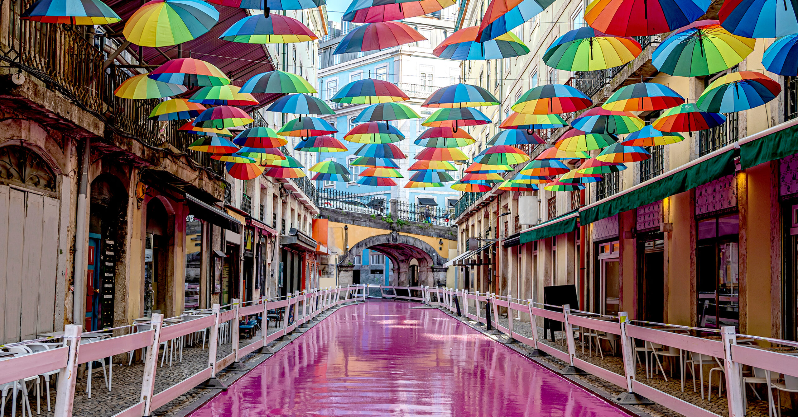
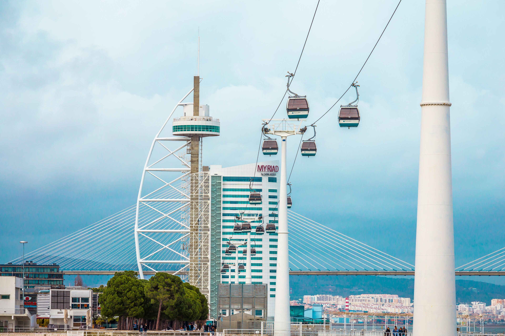

Lisbon Experiences & Viewpoints
Discover scenic hilltop miradouros, vibrant street markets, and unforgettable city activities across the Portuguese capital.

Top ViewpointMiradouro de Santa Luzia e Portas do Sol
Picturesque terrace adorned with traditional azulejo tiles and bougainvillea, offering sweeping views over Alfama’s red roofs and the Tagus River.
- Largo Santa Luzia, Alfama, Lisbon
- Free Entry

Must ExperiencePink Street
Stroll down the iconic painted Pink Street before grabbing gourmet local dishes and drinks inside the bustling Time Out Market food hall.
- Av. 24 de Julho 49, Cais do Sodré, Lisbon
- Free entry | Food items €8 – €18

Scenic RideTelecabine Lisboa
Glide smoothly above the Tagus River and Parque das Nações waterfront for incredible modern skyline views and river breezes.
- Passeio das Tágides, Parque das Nações, Lisbon
- €7 – €9 per ticket
Erasmus Local Tip
Instead of buying expensive drinks at rooftop bars or inside Time Out Market, grab a cold Super Bock or Sagres from a local minimercado for under €1.50 and head to Miradouro de Santa Catarina or Miradouro da Graça. It’s the ultimate student tradition to watch the sunset, listen to live acoustic musicians, and hang out with friends for almost free!